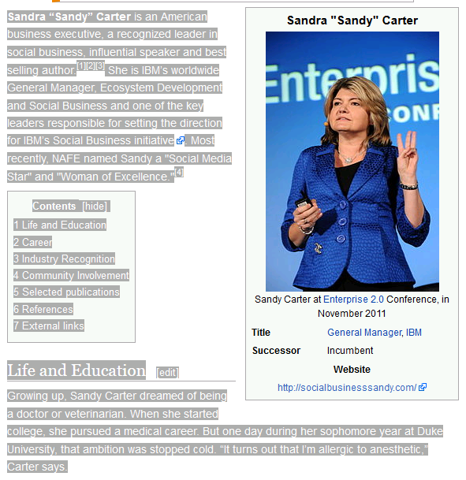

To use the Twitter-Watson Demo, go to Twitter
and find out the Twitter-ID of the person you want to analyze.
Enter this ID without the '@'-Character in the shown input field.
Then press return or click on the Twitter-Button to start the analysis.
A small notification will appear on the right-top corner of your screen.
After a few seconds the notification will disappear and your result will be shown.
At least 50 Tweets written in english are needed to do the analysis.
It is also possible to let Watson analyse a text about a person to generate
a personal profile. Therefore find a source for a clear text about that person
and copy it to the input field.

Source: Wikipedia.com
Then press return or click on the Watson-Button to start the analysis.
A small notification will appear on the right-top corner of your screen.
After a few seconds the notification will disappear and your result will be shown.
At least 100 Words written in english are needed to do the analysis.